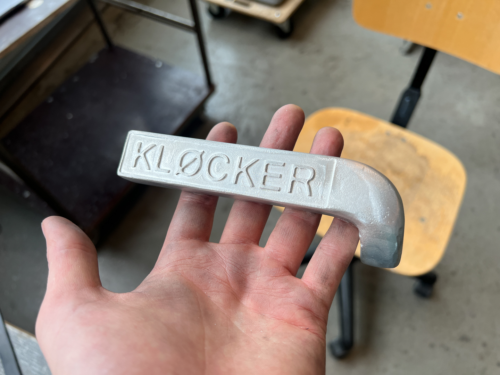
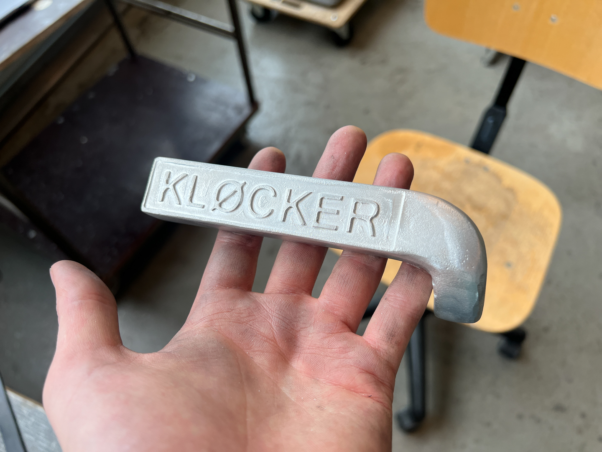

Det første emne i produktdesign går ut på å lage et dørhåndtak. Mitt konsept går ut på å flytte navnskiltet ned på dørhåndtaket. I tillegg har jeg lagt til blindeskirft på baksiden, slik at de som er blinde eller svaksynte også enkelt kan finne fram. Prototypen er støpt i aluminium og det er brukt CNC til å maskinere ut bokstavene.

 
